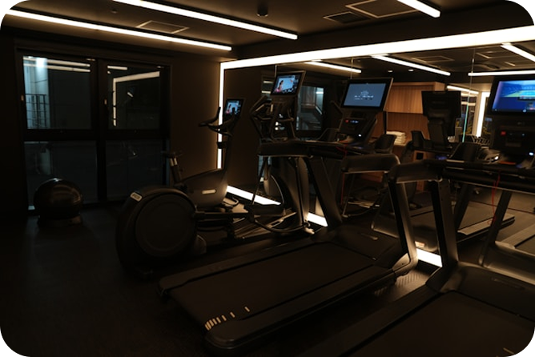
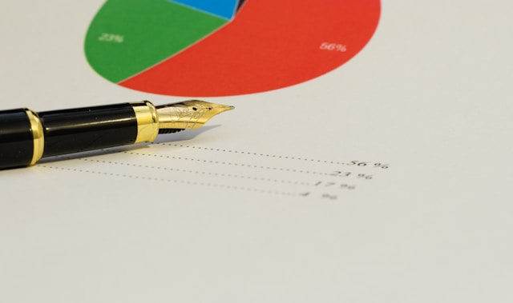
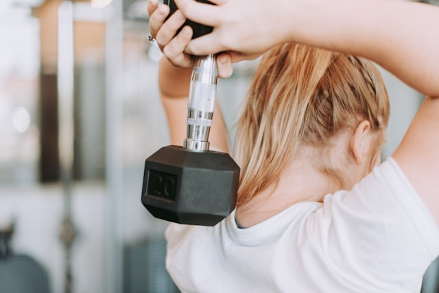

GymPro
gram for you
Составим персональный план тренировок под твой вес, уровень, обородувание и цель за пару минут.

Ты заполняешь короткую анкету: вес, рост, возраст, пол, уровень подготовки и главная цель. Мы не спрашиваем лишнего — только то, что реально влияет на результат. Никаких платных тестов и скрытых подписок. Вся информация нужна исключительно для того, чтобы алгоритм подобрал максимально точную программу под твои задачи. Честность в анкете — залог эффективного плана.


Алгоритм анализирует твои данные и подбирает базовые и изолирующие упражнения. Учитывается всё: наличие инвентаря, травмы в прошлом, количество дней в неделю, которые ты готов посвятить тренировкам. Ты получаешь не абстрактный список, а конкретную схему с весами, количеством подходов и повторений. Программа строится на проверенных научных принципах, а не на ощущениях.
За 2 минуты ты получаешь персональную программу. Помимо тренировочного плана, мы даём советы по питанию, режиму восстановления и прогрессии нагрузок. Программа адаптируется под тебя и меняется вместе с твоим прогрессом. Тренируйся по ней 2-3 месяца, затем обнови данные — алгоритм предложит новый уровень.
Сидя на полу, ноги выпрямлены, резинка закреплена на стопах. Взять резинку в руки и тянуть к поясу, сводя лопатки. Корпус держать прямо. 4×15-20. Отдых 60 секунд.
Встать на резинку ногой, наклониться вперед, опереться свободной рукой о колено или стул. Взять резинку в рабочую руку и тянуть к поясу, чувствуя сокращение широчайшей. 3×12-15 на каждую руку.
Лечь на пол, закрепить резинку за устойчивую опору за головой. Взять резинку прямыми руками и тянуть ее над головой к бедрам, работая широчайшими. 4×12-15.
Долго не мог найти программу, которая учитывает, что я хожу в зал только 3 раза в неделю из-за работы. Здесь всё подобрали под мой график, расписали упражнения по дням, добавили прогрессию. За 2 месяца прибавил 4 кг массы, жим вырос на 15 кг. Ничего лишнего, всё по делу.
С возрастом начал замечать, что старые программы перестали работать, а суставы стали побаливать. Тут подобрали план с акцентом на безопасность: меньше осевой нагрузки, больше работы с контролем техники. За 3 месяца вернул прежние рабочие веса и забыл про боль в коленях. Рекомендую тем, кто тренируется давно и хочет продолжать без травм.
Никогда не занималась спортом, боялась зала и сложных упражнений. Программа оказалась очень понятной: простые движения, чёткие рекомендации по весам. Через полтора месяца ушли боли в спине от сидячей работы, тело стало подтянутым. Отдельное спасибо за советы по питанию — без жёстких диет.